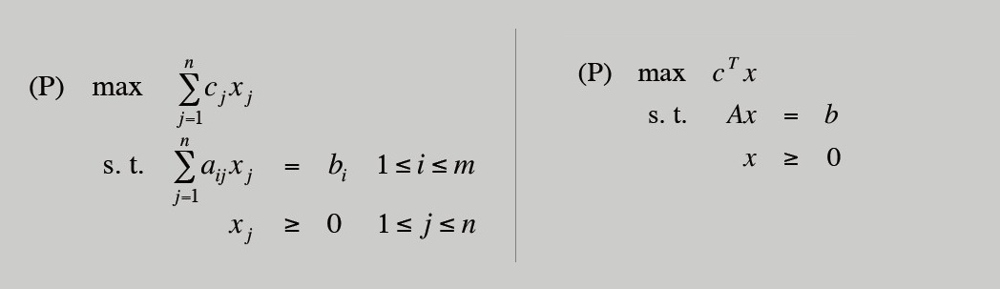
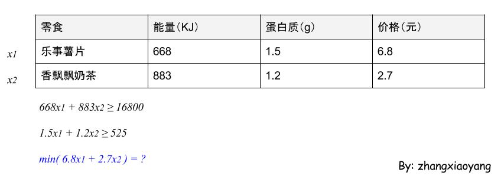
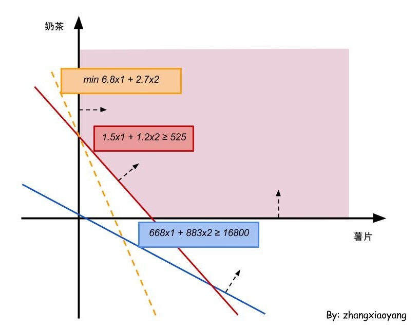
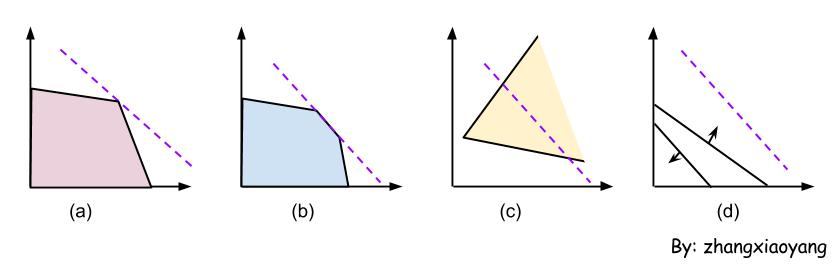
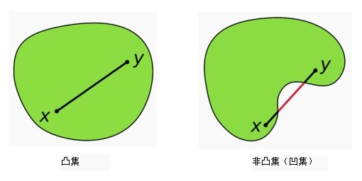
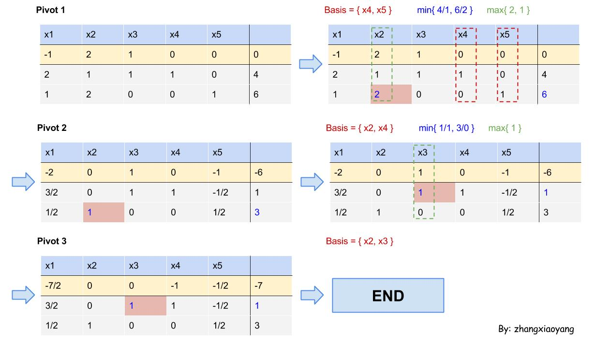

自学算法导论(6-1)
不小心在运筹学里看到了动态规划、线性规划…什么是运筹学？吉大老师给出的解释：运算筹划，出谋献策，以最佳策略取胜。
原来在学算法的同时也学了运筹学！回忆一下动态规划，可以看成一系列决策，决策1、决策2、…、决策n，使目标函数f(决策1、决策2、…、决策n)达到最优（求极值）。
所以，不管是动态规划还是线性规划，都是为了寻找最优的解决方案。
线性规划（Linear Programming）
动态规划与静态规划（线性和非线性规划等）研究的对象本质上都是在若干约束条件下的函数极值问题。两种规划在很多情况下原则上可以相互转换。（来自这里）
Linear programming: Optimize a linear function subject to linear inequalities. （来自Kevin Wayne的PPT）
所以，线性规划就是优化一个被线性约束（线性等式或不等式）的线性函数，使用数学公式如下表示（右侧是矩阵表示法，P代表目标函数，s.t.代表约束条件）。判断一个模型是不是线性规划模型要考虑这些问题：有没有约束（线性）、有没有目标函数（线性，极值）、有没有决策变量（非负）。

所谓的线性，是指以上公式中不存在$x^2,xy,cos(x)$类似的项。
线性规划——宅男示例
高中的时候就学习过使用线性规划求解一些问题。考虑这样一个问题，一个宅男需要在家里宅一星期（7天），他只喜欢吃乐事薯片和香飘飘奶茶。他希望能够满足日常的能量、蛋白质摄入量，并花费最少的钱来购买食物。
根据中国营养学会的推荐，每天需要摄入能量2400KJ，蛋白质75g。可以求出一星期需要摄入能量16800KJ，蛋白质525g。
这就是一个线性规划问题，设购买x1包乐事薯片，x2袋香飘飘奶茶，只要求出价格的最小值即可。

线性规划——你不知道的事
我们需要了解下把线性规划模型（公式）转换为标准形式（standard form），为后面的单纯形方法铺垫一下下。
原来的公式：
$$min \text{ } 6.8x_1+2.7x_2$$
$$668x_1+883x_2 \geq 16800$$
$$1.5x_1+1.2x_2 \geq 525$$
$$x_1 \geq 0, x_2 \geq 0$$
标准形式的公式：
$$max \text{ } -6.8x_1-2.7x_2$$
$$668x_1+883x_2 -s_1 = 16800$$
$$1.5x_1+1.2x_2 -s_2 = 525$$
$$x_1 \geq 0, x_2 \geq 0, s_1 \geq 0, s_2 \geq 0$$
通过加入变量s1和s2，将约束条件的符号变为了等号，加入的变量称作松弛变量。并且，把min转换为了max。这样我们就得到了线性规划的标准形式。
理解线性规划——几何视角
上面的薯片、奶茶问题可以借助坐标系来求解，如下图。如果仅仅满足能量、蛋白质的摄入（不考虑价格）的话，可以看到是粉色的区域。若要求价格最低，则橘色线与纵轴的交点。可以求出最终的最低价格为437.5*2.7=1181.25（元），指望吃零食来满足人体的基本需求还是挺贵的！

通过观察+直觉，可以得出结论：最优解总是出现在顶点（vertex）的位置。
为什么一定在顶点呢？
下面是几种使用几何解法可能遇到的情况，很明显，只有(a)和(b)有最优解。(a)的最优解只有一个（在顶点），(b)的最优解有无数个（顶点也是最优解），(c)无界解（无界，无法给出最优解），(d)无可行解（连可行解都没有，更谈不上最优解了）。

所以，通过几何视角去看线性规划，我们发现，如果有最优解的话，一定会在顶点出现（可能有其它的点也最优，但是顶点肯定会出现）。而且，可行域必然是一个凸集。什么是凸集？集合中任意两点的连线仍然在集合中，如下图。

理解线性规划——代数视角
为什么要用这么多视角看线性规划问题呢？还有前面所谓的类型转换（把线性规划模型转换为标准形式）。Why？
我们感受到了几何辅助我们求最优解的魅力，但是有一个问题。如果不是二维的话（比如宅男除了考虑能力和蛋白质，还考虑钙的含量、铁的含量、锌的含量），我们如何画图，如何求解最优值？
这时候几何的优势就很弱了。所以，我们才用代数的视角分析一下线性规划问题。代数不像几何那么直观，它的优势在于适合理论的分析、公式推导。
回答第二个问题，为什么非要转成所谓的标准形式？因为通过这部分代数视角的分析，我们得出了一些解决线性规划问题的办法。要想使用这里的办法，标准形式会很方便。为什么很方便呢？因为一系列的约束等式可以理解为方程组，所以，可以使用矩阵来表示。
通过矩阵和线性代数的方法，在这里定义一系列晦涩的概念，如可行基、基解等。很抽象，但是可以通过实际的例子体会。这些概念可以帮助我们像解决高维的线性规划问题，也就是用几何方式难以表达的问题。
理解线性规划——代数视角
先回顾一下基本概念，很简单。
- 可行解：满足约束条件的解称为可行解
- 可行域：全部的可行解构成了可行域
- 最优解：使目标函数达到最优值（标准形式里是最大值）的可行解称为最优解
可以这样对比，星空是所有可能的取值，银河系是可行域，银河系的每一颗星星都是可行解，最优解（最适合人类生存的）是地球。
开始学习高大上的新概念。
以上面的“宅男”为例，上面已经转换得到了标准形式：
$$max \text{ } -6.8x_1-2.7x_2 + 0x_3 + 0x_4$$
$$668x_1+883x_2 -x_3 + 0x_4 = 16800$$
$$1.5x_1+1.2x_2 +0x_3 -x_4 = 525$$
$$x_1 \geq 0, x_2 \geq 0, x_3 \geq 0, x_4 \geq 0$$
可以写出约束方程组的系数矩阵：
$$A=\begin{bmatrix}
668 & 883 & -1 & 0 \cr
1.5 & 1.2 & 0 & -1
\end{bmatrix}$$
现在，我们要求一下矩阵的秩（矩阵中不为0的子式的最大阶数）。得到r(A)=2。
我们用$(P_1,P_2,P_3,P_4)$代表矩阵A，每一个P代表一列。
因为我们已经得到了r(A)=2，所以，$(P_1,P_2),(P_1,P_3),(P_1,P_4),(P_2,P_3),\dots, (P_3,P_4)$，一共C(4,r(A))=C(4,2)=6种可能。这六个子阵，如果满足满秩的条件（矩阵的行列式不为0），就称其为一个基。
例如，$(P_2,P_3)$就是一个基。当然，其它的5种情况都满足满秩的条件，也是基。
对于一个基，以$(P_2,P_3)$为例，相应的$x_2,x_3$则称为基变量，$x_1,x_4$称为非基变量。把非基变量置为0，可以求出基变量的值。最终得到$X=(x_1,x_2,x_3,x_4)=(0,437.5,369512.5,0)$，X称为基解。因为所有的变量（基变量和非基变量）都是非负的，我们称X是一个基可行解。对应的基$P_2,P_3$被称作可行基。
至此，新概念介绍完毕。
这个过程还是有些麻烦。我们最终是想得到基可行解。得到基可行解必须先得到基，基是一个满秩的子阵。有了基还不行。每个基对应一个基解，只有基解的每一个变量都非负才能认为当前的基解是一个基可行解，对应的基就是一个可行基。
因为基的个数不是唯一的，所以可能会有很多个基可行解，相当于可行域的顶点。我们知道这些顶点中会有一个或者若干个能够使目标函数最优，所以只需要在这些顶点中寻找使目标函数最优的点即可。
升华一下，就得到了两个线性规划问题的定理：
- 线性规划问题的基可行解x对应于可行域D的顶点
- 若可行域有界，线性规划问题的目标函数一定可以在其可行域的顶点上达到最优，即一定存在一个基可行解是最优解
不要小看这个基可行解和顶点的关系，这个把代数和几何联系起来了！以后可以通过求基可行解的线性代数方法来得到一切顶点，而顶点之中就有我们要的最优解。
单纯形方法（Simplex algorithm）
经过各种努力终于得到了线性规划模型的标准形式，可以使用单纯形方法解决。
单纯形方法是一种寻找最优值的方法，主要思想是先找一个基可行解，看一看是不是最优的，如果不是，则找另外一个解，再进行判定，如此迭代运算，直至找到最优解或者判定其无界。
可以通过一个实际的例子理解单纯形方法。
这里不使用上面“宅男”的例子说明单纯形方法，具体原因后面会说。
使用另一个例子（假设经过各种变换，终于得到了标准的形式），如下：
$$max -x_1+2x_2+x_3$$
$$2x_1+x_2+x_3+x_4=4$$
$$x_1+2x_2+x_5=6$$
$$x_1,x_2,x_3,x_4,x_5 \geq 0$$
下面，我们使用单纯形方法求解这个线性规划问题，求解过程如下图。

过程说明：
- 首先，把目标函数、约束条件填写到一个表中，得到Pivot 1的第一个图（因为目标函数不是一个等式，令其等于0）
- 在Pivot 1的第二个图中的灰色区域找单位列向量，并且要求橘色的区域值为0，可以得到红色虚线的部分。这时候的x4、x5被选中作为基变量，所以Basis={x4,x5}。有了基变量就会有非基变量，看一下非基变量是否全小于等于0，可以看到有2和1不满足条件。这时候选择一个较大的，即2作为下一轮的基变量，并把2的值化为1（同时除以2），把2上面两列的对应位置的值化为0（与当前列进行相加减来达到这个目的）
- 经过计算，我们会得到Pivot 2的第一个图。可以看到，原来红色区域的2已经被化为了1，并且它上面的两个单元格的值化为了0。这时候的基变量就是x2和x4，和上面的方法一样，在非基变量中找大于0且较大的那个，这里是x3。选择一个较小的单元（第二个图的红色区域）进行基变换，也就是把当前单元格变成1，其它同列的单元格变成0
- Pivot 3中，我们发现所有的非基变量都是小于等于0的（在这里是小于0），变换结束。我们可以得出结论，当前的基变量x2和x3和非基变量构成的解X为基可行解，并且是最优解
其实，上面的“非基变量小于等于0”这种说法是不恰当的。这里并不是“非基变量”小于等于0，而是对应的目标函数的系数小于等于0。我们把这些系数叫做检验数。
通过检验数，可以定义算法的结束条件。
- 所有的非基变量的检验数小于0，则有唯一最优解
- 所有的非基变量的检验数小于等于0，且至少有一个非基变量的检验数等于0，则有无限个最优解
- 所有的非基变量的检验数大于0，且对应列向量的各个分量都小于等于0，则无界解
- 所有的非基变量的检验数大于0，且对应列向量的各个分量存在大于0的，则继续进行基变换（即算法没有结束）
还有，这里没有用什么“宅男”的例子。如若使用那个例子，会发现在算法第一步的时候，找不到单位列向量，所以算法无法继续下去。
有人工变量法可以解决这个问题，比如大M法、两阶段法，可以参看一下中国地质大学的讲义。
主要的方法是通过引入若干个变量，人工构造单位列向量使得算法能够继续下去。
注：上面介绍单纯形法用的表不是单纯形表，个人感觉入门的话单纯形表有点死记硬背的感觉，过程很明确，即便是不理解也能用单纯形法，这样不太好吧~
结束语：这个线性规划学的好生纠结，感谢以下优质资源：
- Princeton线性规划课件：http://www.cs.princeton.edu/~wayne/kleinberg-tardos/
- 游庆山老师讲单纯形法视频：http://v.youku.com/v_show/id_XMjY0NjI0MDAw.html
- 清华胡运权老师讲线性规划课件：http://wenku.baidu.com/view/aa0f5742f242336c1eb95e5d.html
-- EOF --